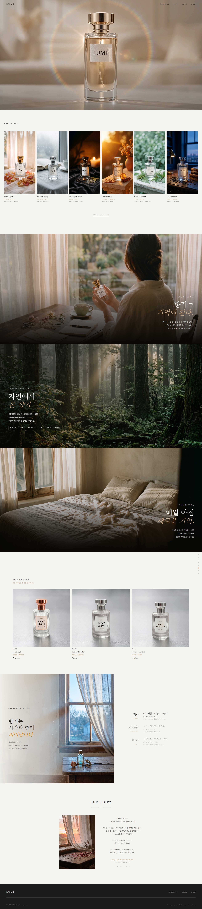
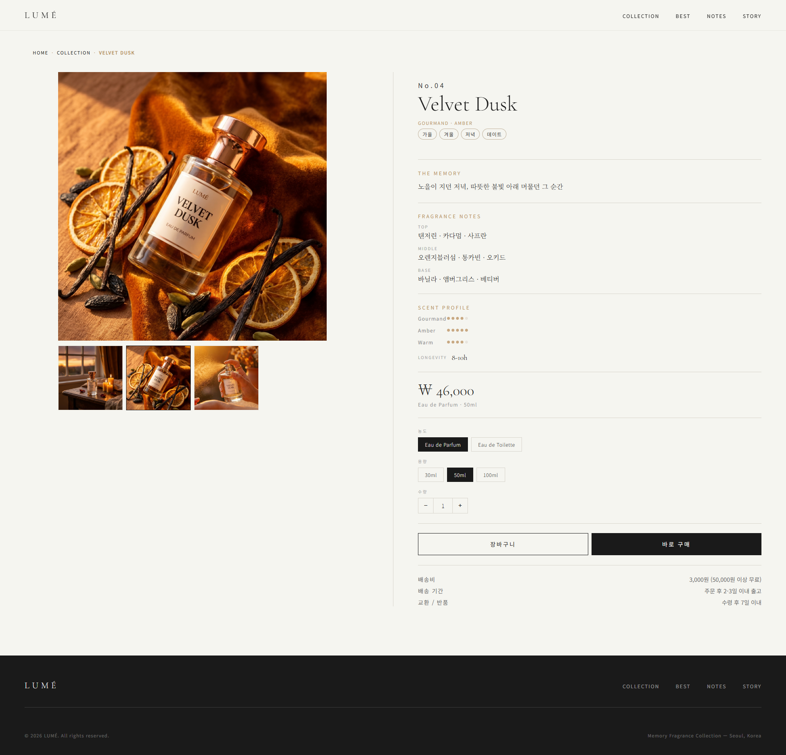
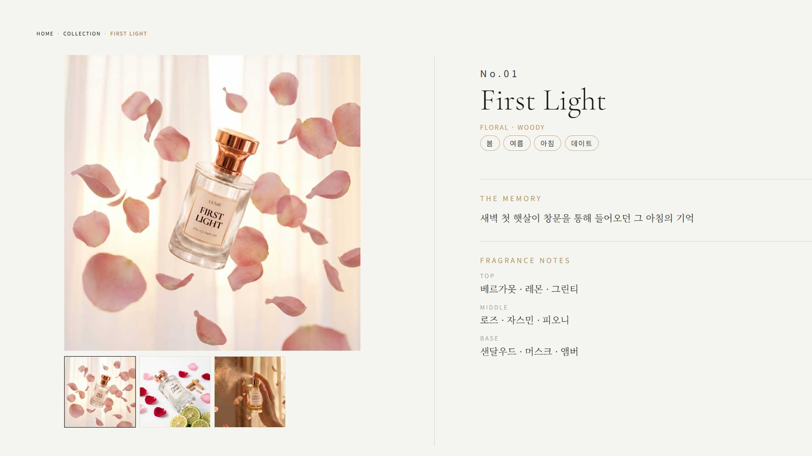
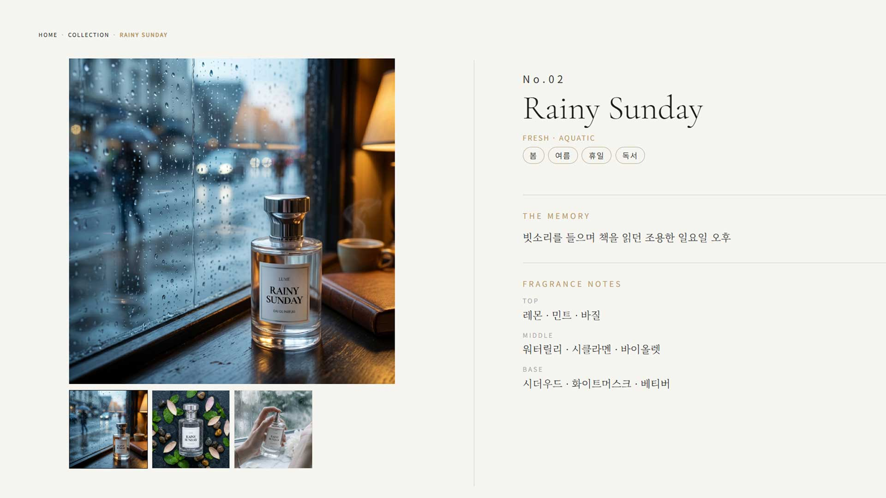
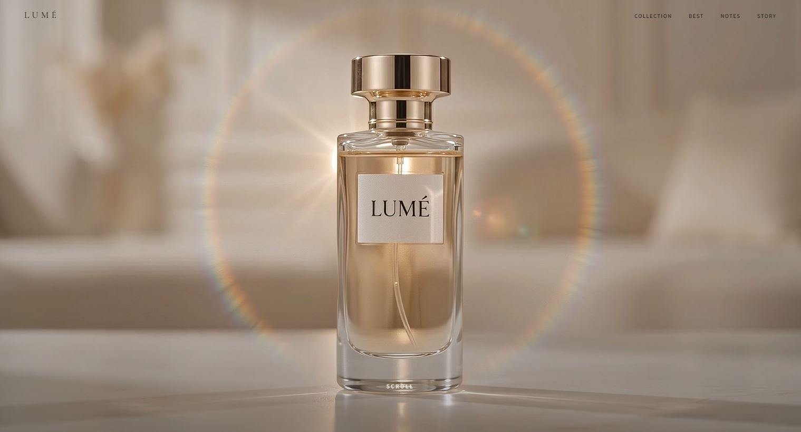
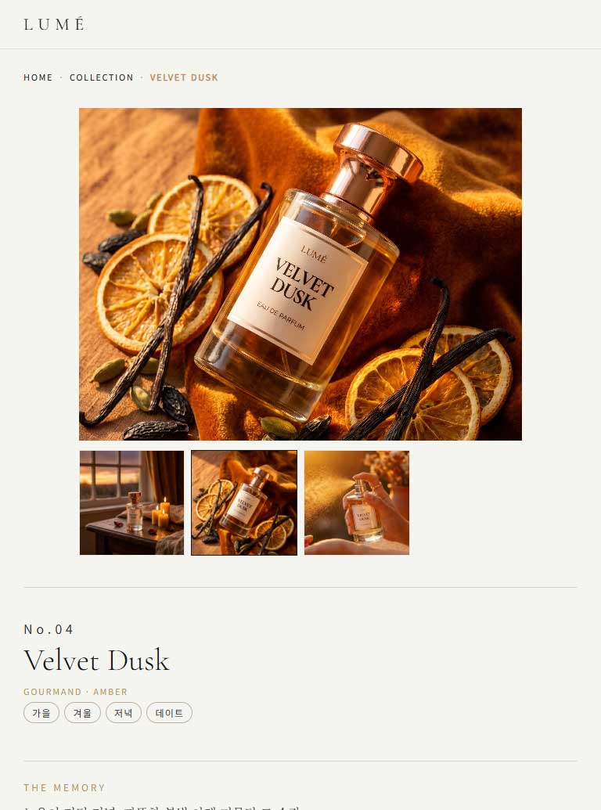
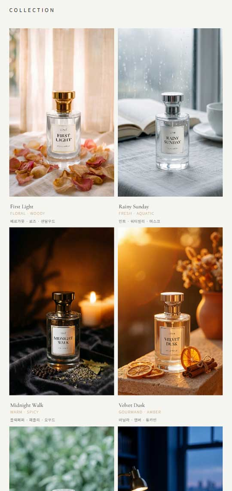

FEATURE 01
Sticky Crossfade 스토리텔링
Feature 섹션은 스크롤 중 화면이 고정된 채 3개의 풀스크린 슬라이드가 크로스페이드로 전환됩니다. 활성 이미지에는 Ken Burns 효과(느린 확대/축소)가 걸리고 텍스트가 순차적으로 페이드인됩니다 — "향기는 기억이 된다", "자연에서 온 향기", "매일 아침 새로운 기억" 세 장면으로 브랜드 철학을 전달합니다.
PROJECT 02 — 가상 럭셔리 향수 브랜드 웹사이트
기억을 향기로 기록한다는 콘셉트의 가상 향수 브랜드.
브랜드 랜딩페이지와 URL 파라미터 기반 제품 상세페이지로 구성된,
랜딩 + 상세 + 미니 커머스 UI 프로젝트입니다.

BRANDING RATIONALE
LUMÉ는 세계관부터 제품 라인업까지 직접 설계한 가상 브랜드입니다. "잊힌 순간을 향기로 되살리다"라는 핵심 문장 아래, 기억의 장면에서 출발한 여섯 가지 향(First Light, Rainy Sunday, Midnight Walk, Velvet Dusk, White Garden, Santal Hour)을 만들고 각 제품에 고유한 '기억 카피'를 붙였습니다.
WHY A FRAGRANCE BRAND
감성·제품·비주얼·상업성을 한 번에 보여줄 수 있는 주제라서 선택했습니다. 향수는 기능 설명이 아니라 느낌을 파는 제품이라, 에디토리얼 연출과 커머스 구조를 함께 담기에 가장 좋은 소재였습니다.
MEMORY COPY
제품마다 기억의 장면을 카피로 붙였습니다 — First Light는 "새벽 첫 햇살이 창문을 통해 들어오던 그 아침의 기억", Rainy Sunday는 "빗소리를 들으며 책을 읽던 조용한 일요일 오후". 제품이 아니라 장면을 파는 브랜드라는 정체성을 카피로 구현했습니다.
COLOR
따뜻한 오프화이트(#F5F5F0) 위에 블랙(#1A1A1A) 텍스트, 웜 베이지(#C8B79A) 포인트를 얹었습니다. 큰 여백과 얇은 타이포로 럭셔리 무드를 만드는 조합입니다.
TYPE PAIRING
세리프 Cormorant Garamond를 디스플레이로 세웠습니다. 향수·패션·뷰티 브랜드와 궁합이 좋은 서체로, Noto Sans KR / Noto Serif KR과 짝지어 감성 카피와 UI 텍스트의 역할을 분리했습니다.
DESIGN TOKENS
COLOR
TYPE
CORMORANT GARAMOND
Memory Fragrance Collection
디스플레이 · 브랜드 타이틀
NOTO SANS KR / SERIF KR
잊힌 순간을 향기로 되살리다
본문(Sans) · 감성 카피(Serif)
OVERVIEW
랜딩(lume.html)은 Hero Video → Collection → Feature → Best → Fragrance
Notes → Story → Footer 흐름으로 브랜드 세계관을 전달하고, 상세페이지
(detail.html)는 detail.html?id=1 형식의 URL 파라미터로 하나의
템플릿에서 6개 제품 데이터를 동적으로 렌더링합니다. Hero 영상으로 분위기를
인식하고 → Collection에서 탐색하고 → hover 후 View Detail → 상세에서 향
노트·기억 카피 확인 → 옵션 선택까지, 사용자가 상품을 탐색하는 구조를 갖춘
프로젝트입니다.

KEY FEATURES
FEATURE 01
Feature 섹션은 스크롤 중 화면이 고정된 채 3개의 풀스크린 슬라이드가 크로스페이드로 전환됩니다. 활성 이미지에는 Ken Burns 효과(느린 확대/축소)가 걸리고 텍스트가 순차적으로 페이드인됩니다 — "향기는 기억이 된다", "자연에서 온 향기", "매일 아침 새로운 기억" 세 장면으로 브랜드 철학을 전달합니다.
FEATURE 02
Top(0—30min) → Middle(30min—4hr) → Base(4hr—)로 향이 시간에 따라 변하는 구조를, 스크롤 진행률에 맞춰 노트별 강조와 배경 이미지가 전환되는 타임라인으로 시각화했습니다. 향수라는 주제와 스크롤 인터랙션이라는 기능이 정확히 맞물리는, 이 프로젝트의 핵심 차별점입니다.
FEATURE 03
detail.html?id=1이면 First Light, ?id=2면
Rainy Sunday — 하나의 템플릿에서 URL 파라미터를 읽어 6개 제품 데이터를
동적으로 렌더링합니다. 제품번호·이름·향 계열·기억 카피·Top/Middle/Base
노트·태그가 모두 JS 데이터 객체에서 출력되고, 브레드크럼의 제품명·문서
타이틀(document.title)까지 함께 동기화됩니다.
id 파라미터가 없거나 잘못된 값이면 1번 상품(First Light)으로
대체되는 기본값 처리도 넣어, 잘못된 접근에서도 빈 화면 없이 항상
콘텐츠가 표시되도록 했습니다.


FEATURE 04
제품별 향의 성격을 5단계 dot indicator로 시각화하되, 카테고리 자체도 제품마다 다르게 매핑했습니다 — First Light는 Fresh·Floral·Woody, Midnight Walk는 Spicy·Woody·Dark처럼 향의 인상에 맞춰 라벨과 강도가 함께 바뀝니다. 제품당 메인·서브 2장을 포함한 3장 이미지로 썸네일 갤러리 클릭 전환을 구현했고, 농도(EDP/EDT)·용량(30/50/100ml) 옵션 선택, 1~99 수량 조절까지 — 상품 탐색에서 구매 직전까지의 커머스 UI 흐름을 구현했습니다.
RESPONSIVE



TROUBLESHOOTING LOG
코드 리뷰를 이어가며 발견한 문제를 하나씩 고쳐온 기록입니다.
발견모바일에서 JS는 Feature 진행률 연출을 끄지만, CSS의 height: 300vh·sticky 구조가 완전히 해제되지 않아 첫 슬라이드만 보이거나 스크롤 공간이 남을 수 있었습니다. Notes 섹션 해제 코드에도 #note → #notes id 오타가 있었습니다.
비주얼 중심 페이지는 모바일에서 무너지면 바로 티가 납니다. 럭셔리 무드를 지키려면 모바일 안정성이 우선입니다.
해결900px 이하에서 #feature/#notes의 높이·sticky를 relative 스택으로 완전히 해제하고, id 오타(#note → #notes)도 함께 수정했습니다.
발견메인 페이지에는 햄버거 메뉴가 있는데 상세페이지 HTML에는 햄버거 버튼이 없었습니다 (CSS 스타일만 존재).
메인과 상세의 모바일 내비게이션이 다르면 완성도가 갑자기 떨어져 보입니다. 두 페이지의 nav 구조는 통일되어야 합니다.
해결상세페이지에도 동일한 햄버거 버튼과 토글 스크립트를 추가하고, aria-expanded 속성으로 열림 상태를 전달하도록 구현했습니다.
발견용량(30/50/100ml)이나 농도(EDP/EDT)를 바꿔도 가격이 ₩46,000으로 고정되어 있었고, 장바구니·바로 구매 버튼은 UI만 구현된 상태였습니다.
옵션이 가격에 반영되어야 실제 커머스처럼 읽히고, 담은 상품이 저장되어야 상세페이지의 흐름이 완결됩니다.
해결용량·농도별 가격 테이블을 데이터에 추가해 선택 시 가격이 갱신되도록 했고, 장바구니 버튼은 제품 id·옵션·수량을 localStorage에 저장하도록 연결했습니다.